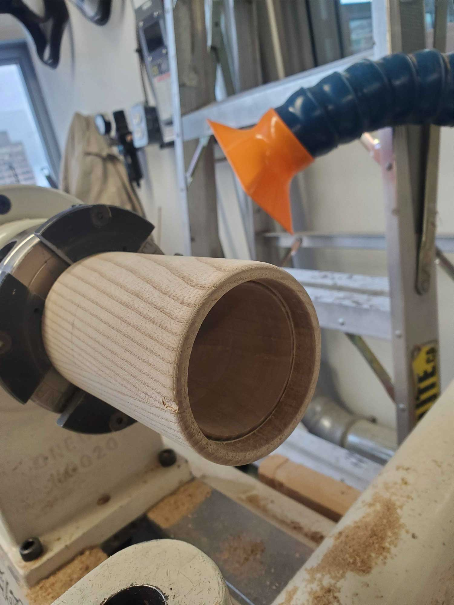
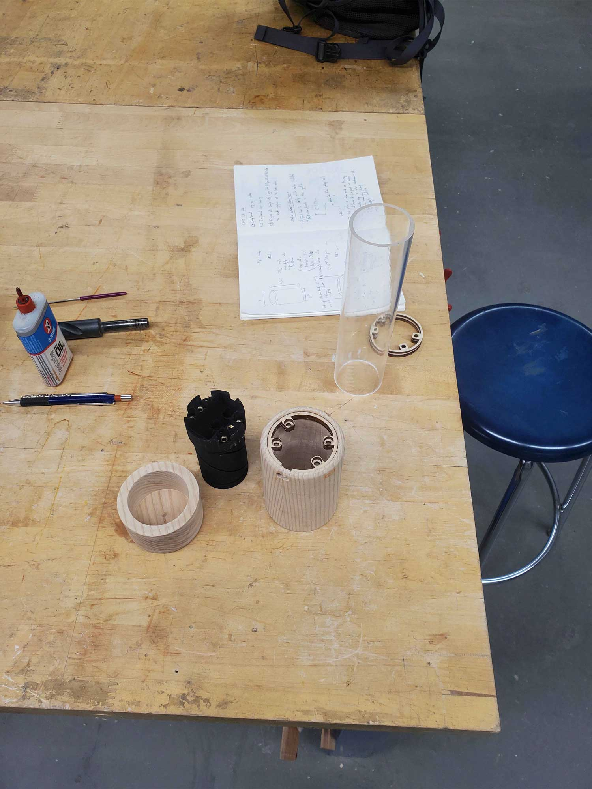
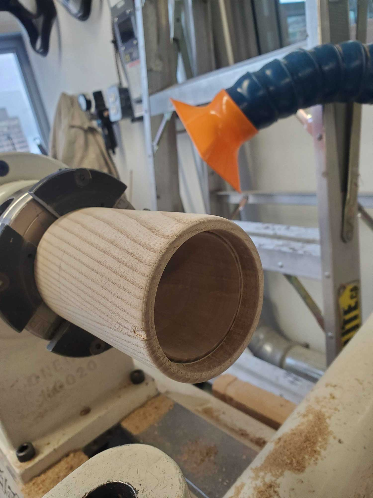
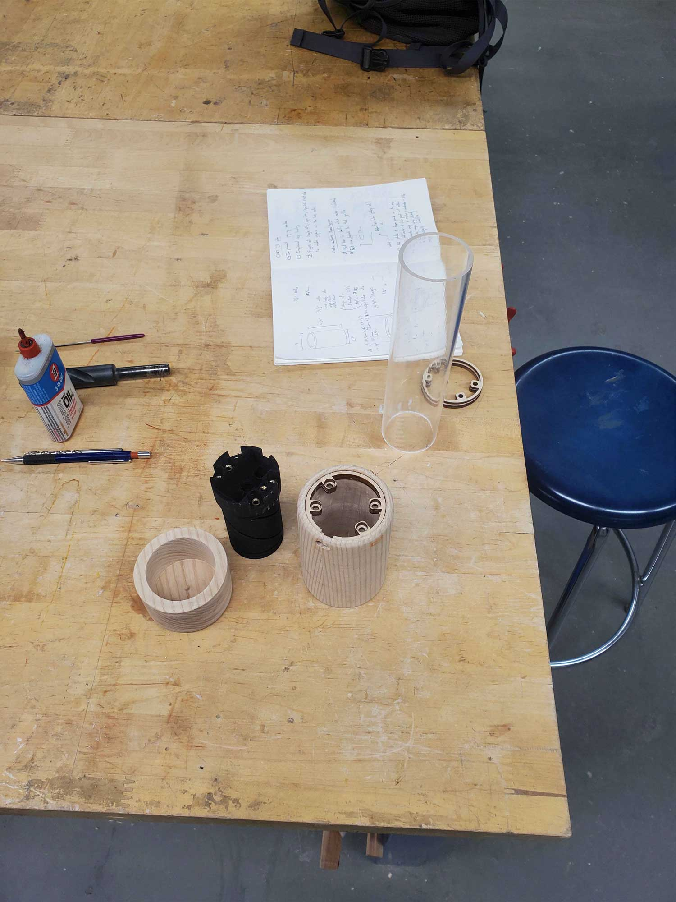

- Overview
- Prompt
- Design Process
- Prototyping
- Making
- the Final Product
Using a 3D printed internal mechanism, the lamp extends and turns on once it hits a critical height, becoming brighter as it extends, before reaching its full extension and continuing to brighten on the horizontal plane.
Rather than designing an experience around the aesthetic appearance of the lamp, I chose to make an outwardly very minimalistic object and focus my efforts on making the interaction novel. The most useful source of inspiration that I had ended up being a lipstick tube, as it has exactly the type of smooth movement that I was imagining for my lamp.
It achieves this by having two cylinders turning independently with extremely small gaps between them, while the product’s “carrier” uses two pins to interact with channels in the cylinders. By twisting the bottom of the lipstick tube, the user is turning the two cylinders against each other, forcing the carrier to move upwards thanks to their respective channels. This lamp uses a similar mechanism that is modified by turning it inside out.
Prompt
Design a lighting solution for a calm interior space. It must be made using sustainable materials and be mindful of environmentally-conscious design techniques. Use 3D printing to produce some part of this design.
Design Process
Right from the beginning, I was inspired to make a lamp where the interaction was the centerpiece of the design. I also decided to challenge myself to design my lamp around the dimensions of a large beer can. So with those rough guidelines, I set to work designing a mechanism that would extend the lamp. I used Rhino 7 for all of my modelling, though much of my work was done in my sketchbook, figuring out how to build the mechanism around my chosen external constraints.
Prototyping
Here are some exploded views of the lamp’s final mechanism iteration. It uses the aforementioned carrier design to both interact with the dimmer switch and raise the lid, revealing the bulb and shade.
Making
For this lamp, I went through several iterations. Initially, I made the shell of the lamp out of aluminum, but this proved to be very time consuming and did not make the nicest end result. Instead, I made settled on turning the lamp on the lathe out of a piece of ash wood. The mechanism also had countless iterations. The main issue was figuring out the perfect thread pitch to turn the switch through its full range without intersecting another thread.
 



the Final Product
The final lamp’s exterior is made out of ash wood, while the interior is 3D printed carbon-infused PLA, as this is much stiffer than typical PLA. Beeswax is used to make the movement smoother. I also designed some packaging for the lamp, pictured below.
This project was one that pushed my limits in terms of finding a mechanical solution to a problem and persevering to resolve it without compromising on the final product. I also got some great practice in doing technical drawings, as I made detailed technical drawings for each component of the final lamp.
It took several iterations and failed mechanisms to reach the final result, as it seemed like every time I was getting close to a solution, I would realize a fundamental problem with how I was going about it. One of the biggest issues lay in finding the space to allow the dimmer switch to turn through its full rotation without impacting the rest of the mechanism. As a result, this project was extremely challenging but I am very proud of the final result. I was able to realize my plan perfectly and really like the aesthetics of the lamp.